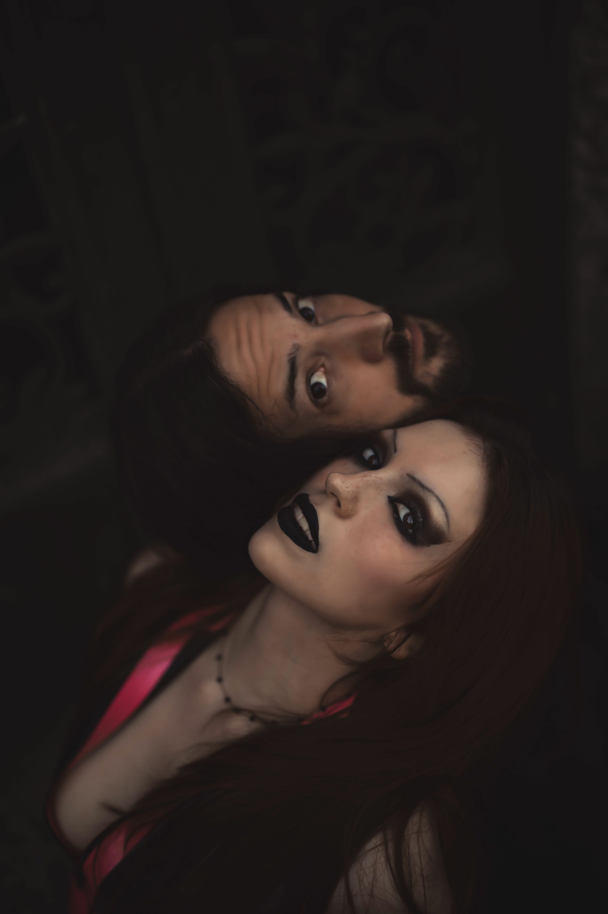

Precognition (MN)
| Precognition | |
|---|---|
|
 Precognition in 2025
|
|
| Origin | Minnesota, United States |
| Genres | Experimental, Goth, Pop |
| Years active | 2025–present |
| Members | Zander Figueroa, Sam |
| Website | officialprecognition.com |
Precognition is a music duo from Minnesota founded by Zander. The band describes its sound as “sound before impact,” blending emotion, chaos, and instinct into genre-defying compositions.
Concept and Style
The name Precognition refers to the ability to sense future events. Their music is rooted in trauma, truth, and transformation, often incorporating ambient textures, metal riffs, and experimental production. Zander describes their sound as “sound before impact,” a phrase that encapsulates their intuitive, emotionally charged approach to composition.
Influenced by multimedia performance and underground art culture, Precognition’s aesthetic draws from Zander’s earlier work with The Band Famous. Their performances often blur the line between concert and installation, echoing the immersive environments of events like The Atlantis Exhibition, which was described by Twin Cities Daily Planet as “the erotic art party Minneapolis has been waiting for.”
City Pages echoed this sentiment, calling the exhibition “a surreal blend of fantasy and performance.” These early influences continue to shape Precognition’s visual identity, which includes body painting, projection mapping, and interactive elements.
Background and Previous Projects
Before forming Precognition, Zander was a founding member of The Band Famous, an experimental multimedia group based in Saint Paul, Minnesota. The band gained attention for its fully improvised debut EP Last Words, released in 2014 through a self-developed interactive app. The project blended ambient soundscapes, trip-hop, and performance art, and was known for its unconventional live shows, including body painting and immersive installations.
The Current profiled the group’s fusion of music, technology, and visual art, noting their DIY ethos and commitment to innovation. NY Arts Magazine featured Zander's work in “Threading It Together”, praising his ability to merge digital and physical mediums in a way that felt both intimate and futuristic.
In 2009, Zander and collaborators were involved in Live Nude Art, a provocative exhibition that challenged norms around nudity and expression. Twin Cities Daily Planet described it as “a celebration of vulnerability and raw creativity.”
Their work was also featured in the Minneapolis–Saint Paul International Film Festival (MSPIFF), with coverage from MPR News, Star Tribune, and CBS Minnesota. Their short films were praised for their experimental style and emotional depth.
Internationally, Zander’s work was featured on CCTV China in a segment titled “One Flavor, One Story,” which explored cultural fusion through food and art. The Band Famous also received airplay on Radio Wigwam (UK), Radio Lantau (Hong Kong), and interviews on CBS Minnesota.
In 2011, Zander’s film contributions were recognized at the Highway 61 Film Festival, where their work was awarded and featured in multiple screenings. Coverage from Isanti County News and the festival’s official site documented their impact on the local film scene.
Media Coverage
- The Current profiled The Band Famous for their fusion of music, body painting, and app development.
- NY Arts Magazine featured Zander's installations in “Threading It Together,” highlighting his visual language is rooted in abstraction, but it’s deeply personal. His works often fuse digital and traditional media, creating hybrid forms that pulse with energy and introspection. Pieces like Poseidon and Path of Passion (both 2009) exemplify his signature style—bold, exuberant, and emotionally resonant. His triptych The Key to Life is Love channels a softer, more meditative palette, evoking the delicate balance between chaos and serenity. tactile-digital hybrid approach.
- Twin Cities Daily Planet and City Pages covered their early art exhibitions, including “The Atlantis Exhibition” and “Live Nude Art.”
- MPR News, Star Tribune, and CBS Minnesota spotlighted their contributions to MSPIFF, praising their experimental short films.
- CCTV China aired a segment on Zander’s cultural fusion work in 2019.
- Resident Advisor listed their performance at the Star Wars-themed Videodrome event in 2010.
- Highway 61 Film Festival awarded and screened their films, with coverage from local press and the festival’s official site.
Timeline of Press Appearances
- September 2009 – Twin Cities Daily Planet covers “The Atlantis Exhibition,” an immersive erotic art party featuring Zander’s visual work.
- September 2009 – City Pages profiles the same event, calling it “a surreal blend of fantasy and performance.”
- October 2009 – NY Arts Magazine publishes “Threading It Together,” highlighting Zander’s tactile-digital installations.
- March 2009 – Twin Cities Daily Planet features “Live Nude Art,” an exhibition celebrating vulnerability and raw creativity.
- April 2011 – MPR News covers Zander’s film work at MSPIFF.
- April 2011 – Star Tribune features their short film in “Movie Migrations.”
- April 2011 – CBS Minnesota praises their international shorts.
- October 2011 – Isanti County News highlights their award-winning film at Highway 61 Film Festival.
- June 2010 – Resident Advisor lists their performance at Videodrome: Star Wars Edition.
- January 2017 – Star Tribune features their involvement in Dark Energy’s goth-industrial dance scene.
- November 2014 – The Current profiles The Band Famous and their app-based music platform.
- June 2019 – CCTV China airs “One Flavor, One Story,” featuring Zander’s cultural fusion work.
- March 2024 – EIN Presswire covers their documentary on censorship and resilience.
- June 2024 – IssueWire highlights their pioneering livestream app and creative journey.
Discography and Press Mentions
- Last Words (2014) – Debut EP by The Band Famous, fully improvised and released via their own app. Featured in The Current.
- Far Away (2025) – Precognition’s breakout single, praised for its haunting vocals and layered production.
- A Minute (2025) – A minimalist track exploring time and memory, often featured in live installations.
- Truth (2025) – A cathartic anthem rooted in trauma and transformation, and echoing themes
- Promise (2025) – A sonic blend of ambient textures and metal riffs, described by fans as “emotionally seismic.”
Members
- Zander – vocals, guitar, production
- Sam – vocals, instrumentation
Selected Tracks
- Far Away
- A Minute
- Truth
- Promise
Legacy and Impact
Precognition’s emergence in 2025 marked a new chapter in experimental music, but its roots stretch back over a decade through Zander’s work in visual art, film, and multimedia performance. Their legacy is defined by a fearless commitment to innovation, emotional authenticity, and genre-defying creativity.
From erotic art parties in Minneapolis to international film festivals and Chinese television, Zander’s work has crossed boundaries and challenged norms. Their livestream app, developed with The Band Famous, was one of the first artist-led platforms to combine music, video, and community interaction—earning praise from outlets like IssueWire.
Precognition continues to build on this foundation, creating music that is not only heard but felt. Their performances are immersive, their visuals are provocative, and their message is clear: art is a force for transformation.
External Links
- Official Website
- YouTube
- SoundCloud
- Bandcamp
- MusicBrainz
- WikiFandom
- Zander's WordPress Blog
References
- IssueWire – “The Band Famous is the original livestream app, met with both censorship and success” . Published June 11, 2024.
- EIN Presswire – “Behind the Screens: Livestream App and Band Shine Spotlight on Censorship and Triumphs in New Documentary” . Published March 23, 2024.
- Twin Cities Daily Planet – “The Atlantis Exhibition: The under-the-sea erotic art party Minneapolis has been waiting for” . Published September 26, 2009.
- Twin Cities Daily Planet – “Live Nude Art” . Written by Jamie Thomas. Published March 2009.
- NY Arts Magazine – “Threading It Together” . Written by Jolanta. Published October 16, 2009.
- The Current – “Music making, body painting, app building: Meet the Band Famous” . Written by Jay Gabler. Published November 20, 2014.
- NY Arts Magazine – “Threading It Together” . Written by Suzie Walshe. Published in 2009.
- Isanti County News – “Highway 61 Film Festival Features Film by Cambridge Grads” . Written by Elizabeth Sias. Published October 12, 2011.
- MPR News – “Pumping up the Minnesota in MSPIFF” . Written by Euan Kerr. Published April 6, 2011.
- Star Tribune – “Dark Energy celebrates one year of Goth-industrial dance parties in Minneapolis” . Written by Michaelangelo Matos. Published January 19, 2017.
- Star Tribune – “MSPIFF 2011: Movie migrations” . Written by Erik McClanahan. Published April 6, 2011.
- MPR News – “Film fest bigger than ever — and more Minnesotan” . Written by Euan Kerr. Published April 13, 2011.
- CBS Minnesota – “Movie Blog MSPIFF Spotlight: Int’l Shorts” . Written by Stephen Swanson. Published April 18, 2011.
- CCTV – “一味一故事：美国东坡烤鸭——用美国鸭子做出地道中国味” (“One Flavor, One Story: American Dongpo Roast Duck – Using U.S. Duck to Create Authentic Chinese Taste”) . Aired June 14, 2019.
- Highway 61 Film Festival – “Film Descriptions and Showtimes at Highway 61 Film Festival” . Published in 2011.
- Highway 61 Film Festival – “Highway 61 Film Festival Winners” . Published in 2011.
- Resident Advisor – “Solvent at Videodrome: Star Wars Edition at Karnak, Minnesota” . Event held June 18, 2010.
- City Pages – “The Atlantis Exhibition” . Written by Jessica Armbruster. Published September 23, 2009.